library(postcard)
withr::local_seed(1395878)
withr::local_options(list(postcard.verbose = 0))Estimating the power for marginal effects
The method proposed in Powering RCTs for marginal
effects with GLMs using prognostic score adjustment by
Højbjerre-Frandsen et. al (2025), which can be used to estimate the
power when estimating any marginal effect, is implemented in the
function power_marginaleffect().
An introductory example is available in
vignette("postcard"), but here we describe how to specify
arguments to change the default behavior of the function to align with
assumptions for the power estimation.
Simulating some data
We generate count data to showcase the flexibility of
power_marginaleffect() that does not assume a linear
model.
n_train <- 2000
n_test <- 200
b1 <- 1.2
b2 <- 2.3
b3 <- 1
b4 <- 1.8
train_pois <- dplyr::mutate(
glm_data(
Y ~ b1*abs(sin(X1))-b2*X2+b3*X3-b4*X2*X3,
X1 = runif(n_train, min = -2, max = 2),
X2 = rnorm(n_train, mean = 2, sd = 2),
X3 = rgamma(n_train, shape = 1),
family = gaussian()
),
Y = round(abs(Y))
)
test_pois <- dplyr::mutate(
glm_data(
Y ~ b1*abs(sin(X1))-b2*X2+b3*X3-b4*X2*X3,
X1 = runif(n_test, min = -2, max = 2),
X2 = rnorm(n_test, mean = 2, sd = 2),
X3 = rgamma(n_test, shape = 1),
family = gaussian()
),
Y = round(abs(Y))
)Controlling assumptions
As a default, the variance in group 0 is estimated from the sample
variance of the response, and the variance in group 1 is assumed to be
the same as the estimated variance in group 0. Use argument
var1 to change the variance estimate in group 1, either
with a function that modifies the estimate obtained for group 0 or as a
numeric.
The same is true for the MSE, where kappa1_squared as a
default is taken to be the same as the MSE in group 0 unless a
function or numeric is specified.
Below is an example showcasing the specification of var1
and kappa1_squared according to prior beliefs.
lrnr <- fit_best_learner(list(mod = Y ~ X1 + X2 + X3), data = train_pois)
preds <- dplyr::pull(predict(lrnr, new_data = test_pois))
power_marginaleffect(
response = test_pois$Y,
predictions = preds,
var1 = function(var0) 1.2 * var0,
kappa1_squared = 2,
estimand_fun = "rate_ratio",
target_effect = 1.3,
exposure_prob = 1/2
)
#> [1] 0.8377895For linear models
The functions described in the help page power_linear()
provide utilities for prospective power calculations using linear
models. We conduct sample size calculations by constructing power curves
using a standard ANCOVA method as described in
(Guenther WC. Sample Size Formulas for Normal Theory T Tests. The
American Statistician. 1981;35(4):243–244) and (Schouten HJA. Sample
size formula with a continuous outcome for unequal group sizes and
unequal variances. Statistics in Medicine. 1999;18(1):87–91).
We compare the resulting power for ANCOVA models that leverage prognostic covariate adjustment and ones that don’t. In usual cases of wanting to conduct sample size/power analyses prospectively, data of the new exposure is not available at the time of the analysis. What we can do is use historical data of the comparator group to estimate a variance and adjust this according to beliefs we might have about data from the novel group.
Simulating data
As described above, data is not available at the time of a
prospective power analysis. To showcase a common use case, we here
simulate historical data, which we use to estimate the variance of the
response adjusted by the coefficient of determination with the function
variance_ancova().
To compare power curves between a “standard” ANCOVA model and one using prognostic covariate adjustment, we simulate historical data, so we can fit a prognostic model to the training data and use the resulting model to predict prognostic scores in the test data.
# Generate some data
b0 <- 1
b1 <- 1.6
b2 <- 1.4
b3 <- 2
b4 <- 0.8
train <- glm_data(
Y ~ b0+b1*abs(sin(X1))+b2*X2+b3*X3+b4*X2*X3,
X1 = runif(n_train, min = -2, max = 2),
X2 = rnorm(n_train, mean = 2, sd = 2),
X3 = rbinom(n_train, 1, 0.5)
)
test <- glm_data(
Y ~ b0+b1*abs(sin(X1))+b2*X2+b3*X3+b4*X2*X3,
X1 = runif(n_test, min = -2, max = 2),
X2 = rnorm(n_test, mean = 2, sd = 2),
X3 = rbinom(n_test, 1, 0.5)
)Fitting a prognostic model
Using the training part of the historical data, we fit a prognostic
model using the fit_best_learner() function. This fits a
discrete super learner and returns it as a trained workflow, we can use
for prediction to construct our prognostic scores.
lrnr <- fit_best_learner(
data = train,
preproc = list(mod = Y ~ .),
cv_folds = 10,
verbose = 0
)
test <- dplyr::bind_cols(test, predict(lrnr, test))Estimating the variance used for power approximation
We use the function variance_ancova to estimate the
entity
in case of a “standard” ANCOVA model adjusting for covariates in data,
and in case of an ANCOVA utilising prognostic covariate
adjustment by adjusting for the prognostic score as a
covariate.
var_bound_ancova <- variance_ancova(Y ~ X1 + X2 + X3, data = test)
var_bound_prog <- variance_ancova(Y ~ X1 + X2 + X3 + .pred, data = test)Creating a plot of power curves
In order to see how the estimated power behaves as a function of the
total sample size, we iterate the power_gs function for a
number of different sample sizes and save the results using both the
estimated variance with and without prognostic covariate adjustment.
Note we here just use the
power_gs()function, butpower_nc()is also available and works exactly the same except it needs an additional mandatory argumentdfwith degrees of freedom for the t-distribution.
desired_power <- 0.9
n_from <- 10
n_to <- 250
iterate_power <- function(variance) {
power_ancova <- sapply(n_from:n_to, FUN = function(n) power_gs(
n = n,
variance = variance,
r = 1, ate = .8, margin = 0
)
)
data.frame(n = n_from:n_to, power = power_ancova)
}
data_power <- dplyr::bind_rows(
iterate_power(var_bound_ancova) %>%
dplyr::mutate(
n_desired = samplesize_gs(
variance = var_bound_ancova,
power = desired_power,
r = 1, ate = .8, margin = 0
),
model = "ancova",
model_label = "ANCOVA"
),
iterate_power(var_bound_prog) %>%
dplyr::mutate(
n_desired = samplesize_gs(
variance = var_bound_prog,
power = desired_power,
r = 1, ate = .8, margin = 0
),
model = "prog",
model_label = "ANCOVA with prognostic score")
)We create a plot of the estimated power across values of sample sizes for the two different models, mark a desired power of 90% as a horizontal line and create vertical lines with labels that show the sample size needed to obtain 90% power with each model.
Note if we were just interested in finding the sample size needed for 90% power, simply running
samplesize_gs()as we do below would be enough.
model_cols <- c(ancova = "darkorange1", prog = "dodgerblue4")
show_npower <- function(data, coords) {
line <- grid::segmentsGrob(
x0 = coords$x, x1 = coords$x,
y0 = 0, y1 = coords$y,
gp = grid::gpar(
lty = "dashed",
col = data$colour
))
group <- unique(data$group)
if (group == 1)
y_pos <- grid::unit(coords$y, "npc") - grid::unit(2, "mm")
else
y_pos <- grid::unit(0.55, "npc")
label <- grid::textGrob(
label = paste0(data$model_label, ": ", ceiling(data$x)),
x = grid::unit(coords$x, "npc") + grid::unit(2, "mm"),
y = y_pos,
just = c(0, 1),
gp = grid::gpar(col = data$colour)
)
grid::grobTree(line, label)
}
data_power %>%
ggplot2::ggplot(ggplot2::aes(x = n, y = power, color = model)) +
ggplot2::geom_line(linewidth = 1.2, alpha = 0.8,
show.legend = FALSE) +
ggplot2::geom_hline(
yintercept = desired_power,
color = "grey40",
linetype = "dashed"
) +
gggrid::grid_group(
show_npower,
ggplot2::aes(x = n_desired,
y = desired_power,
model_label = model_label)
) +
ggplot2::scale_color_manual(
name = "",
values = model_cols) +
ggplot2::scale_y_continuous(
breaks = c(0, 0.2, 0.4, 0.6, 0.8, 1),
labels = function(x) paste0(x*100, "%")
) +
ggplot2::labs(x = "Total sample size", y = "Power",
title = "Guenther Schouten approximation of power") +
ggplot2::theme(plot.title = ggplot2::element_text(
face = "bold",
size = 16
)) +
ggplot2::theme_minimal()